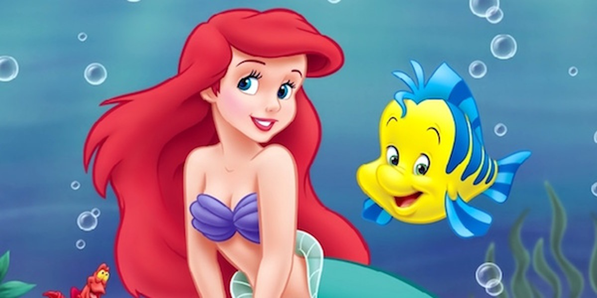
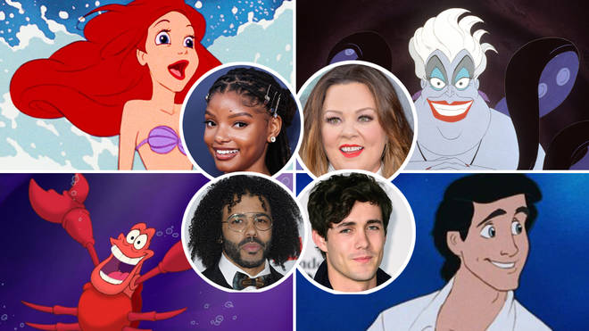

THE LITTLE MERMAID

The Little Mermaid is a 1989 American animated musical fantasy film produced by Walt Disney Feature Animation and Walt Disney Pictures. The 28th Disney animated feature film, it is based on the 1837 Danish fairy tale of the same name by Hans Christian Andersen. The film tells the story of a mermaid princess named Ariel, who dreams of becoming human and falls in love with a human prince named Eric, which leads her to make a magic deal with the sea witch, Ursula, to become human and be with him. Written and directed by Ron Clements and John Musker, with music by Alan Menken and lyrics by Howard Ashman (who also served as co-producer alongside John Musker), and art direction by Michael Peraza Jr. and Donald A. Towns, the film features the voices of Jodi Benson, Christopher Daniel Barnes, Pat Carroll, Samuel E. Wright, Jason Marin, Kenneth Mars, Buddy Hackett, and René Auberjonois. Walt Disney planned to put the story in a proposed package film containing Andersen's stories, but scrapped the project. In 1985, while working on The Great Mouse Detective (1986), Clements and Musker decided to adapt the fairy tale and proposed it to Disney Studios chairman Jeffrey Katzenberg, who initially declined due to its similarities to a proposed sequel to the 1984 film Splash, but ultimately approved of it. Ashman became involved and brought in Menken. With supervision from Katzenberg, they made a Broadway-style structure with musical numbers as the staff was working on Oliver & Company (1988). Katzenberg warned that the film would earn less since it appealed to females, but he eventually became convinced that it would be Disney's first blockbuster hit. The Little Mermaid was released to theaters on November 17, 1989 to critical acclaim, earning praise for the animation, music, and characters. It was also a commercial success, garnering $84 million at the domestic box office during its initial release,[4] and $233 million in total lifetime gross worldwide.[3] After the major success of both the 1986 Disney animated film The Great Mouse Detective[5][6] and the 1988 Disney/Amblin live-action/animated film Who Framed Roger Rabbit, The Little Mermaid is given credit for breathing life back into the art of Disney animated feature films after some films produced by Disney were struggling. It also marked the start of the era known as the Disney Renaissance.[7] The film won two Academy Awards for Best Original Score and Best Original Song ("Under the Sea"). The film's success led to a stage adaptation with a book by Doug Wright[8] and additional songs by Alan Menken and new lyricist Glenn Slater opened in Denver in July 2007 and began performances on Broadway January 10, 2008[9][10] starring Sierra Boggess.[11][12][13] Other derived works and material inspired by the movie, include a live-action film adaptation, directed by Rob Marshall, currently in production, and a 2019 live musical presentation of the film airing on ABC as part of The Wonderful World of Disney.
| Title of Movie | The Actors | Age Restrictions | Show Times | QR code for Booking & payments |
|---|---|---|---|---|
| The Little Mermaid | René Auberjonois, Christopher Daniel, Barnes Jodi, Benson Pat Carroll | All Ages Welcome | 10:00 to 13:00 & 14:00 to 17:00 Daily |